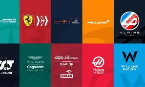

ESCUDERIAS

Las escuderías de la Fórmula 1 es un selecto club de equipos de pilotos, los cuales cuentan con licencia para disputar las carreras que componen el Mundial de F1. la mayoría de estas escuderías están asociadas a grandes marcas del automóviles como Mercedes Benz o Red Bull Racing Honda, por mencionar algunos.cada escudería compite en la carrera con dos pilotos, y disponen de otros tantos pilotos probadores. También cuentan con una cantidad considerable de ingenieros y todo un equipo detrás, los cuales auxilian a los pilotos y hacen que el funcionamiento sea adecuado y seguro para todos los participanes
- Oracle Red Bull Racing
Oracle Red Bull Racing
- Mercedes-AMG F1 Team
Mercedes-AMG F1 Team
S
- cuderia Ferrari
Scuderia Ferrari
- McLaren F1 Team
McLaren F1 Team
- Aston Martin Aramco F1 Team
Aston Martin Aramco F1 Team
- Alpine F1 Team
Alpine F1 Team
- Williams Racing
Williams Racing
- Racing Bulls
Racing Bulls
- Stake F1 Sauber
Stake F1 Sauber
- Haas F1 Team
Haas F1 Team
|
pagina principal